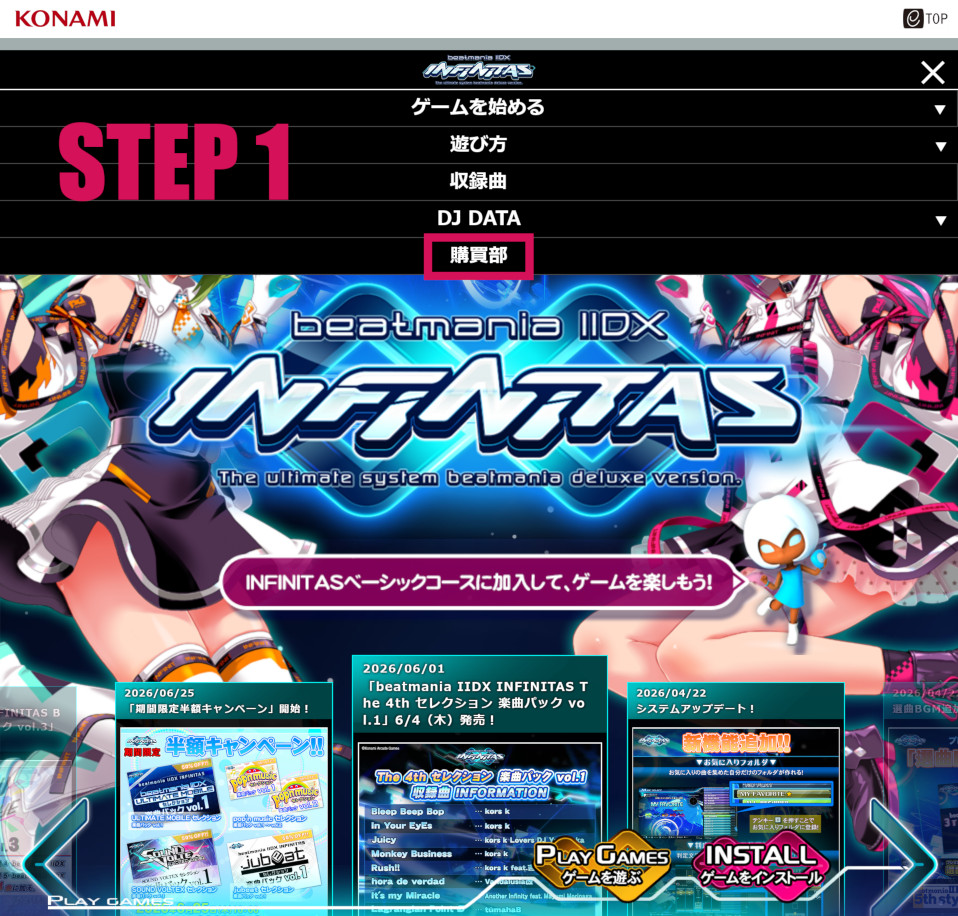
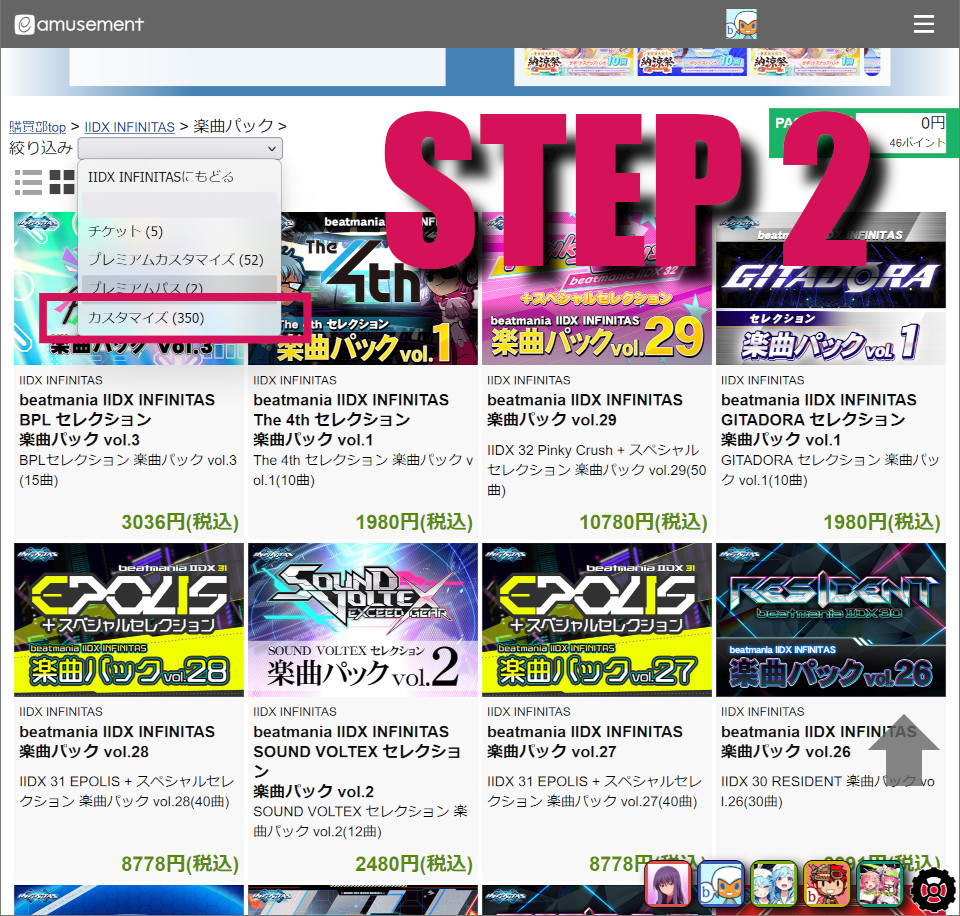
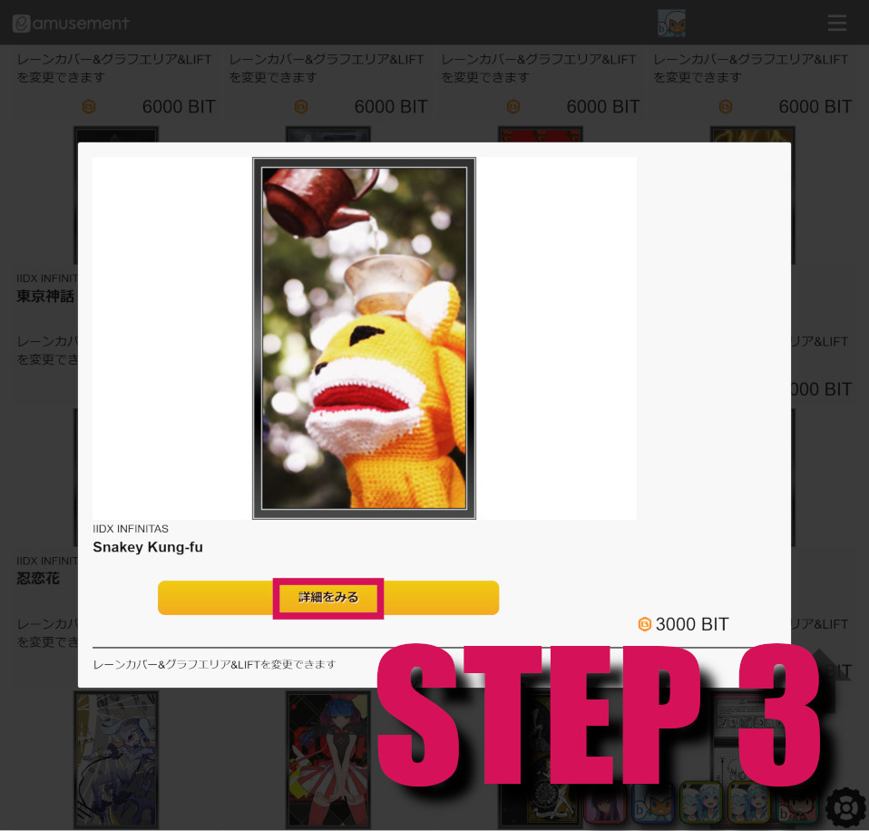
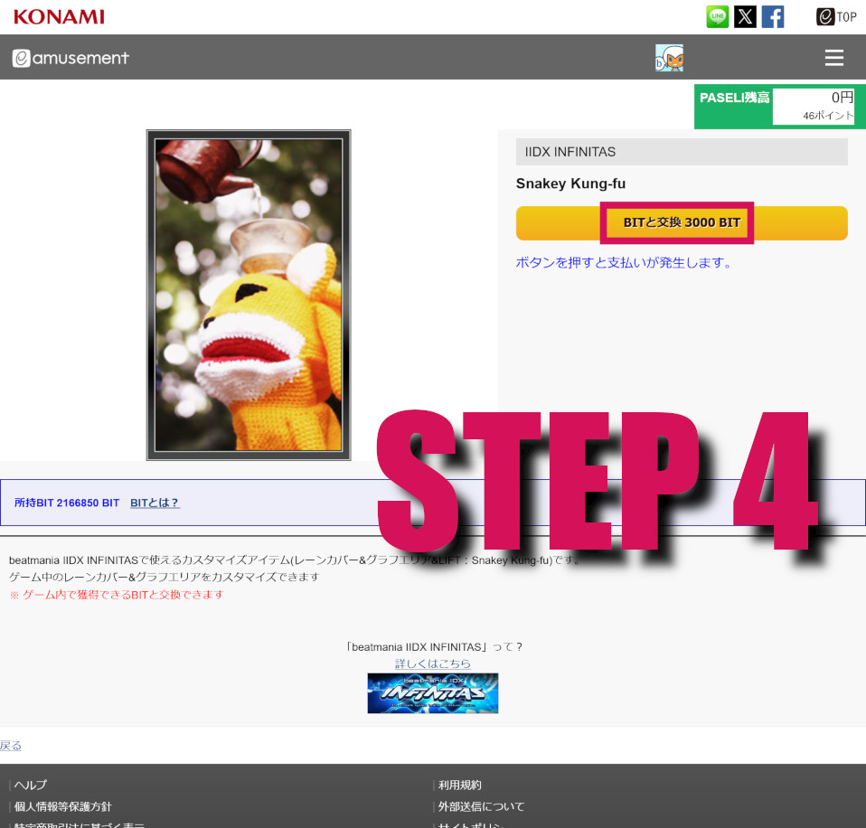
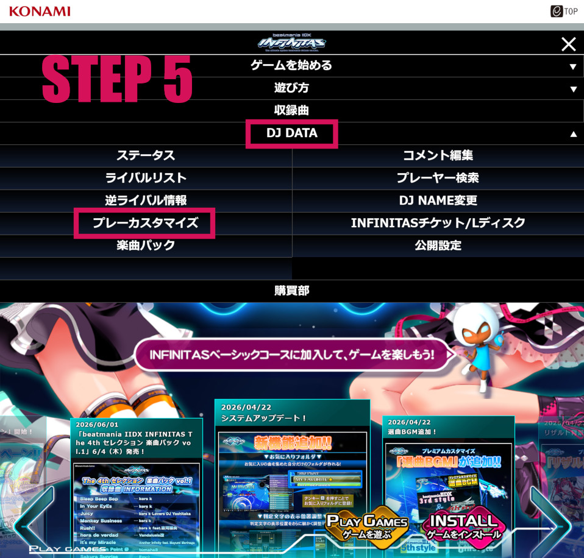
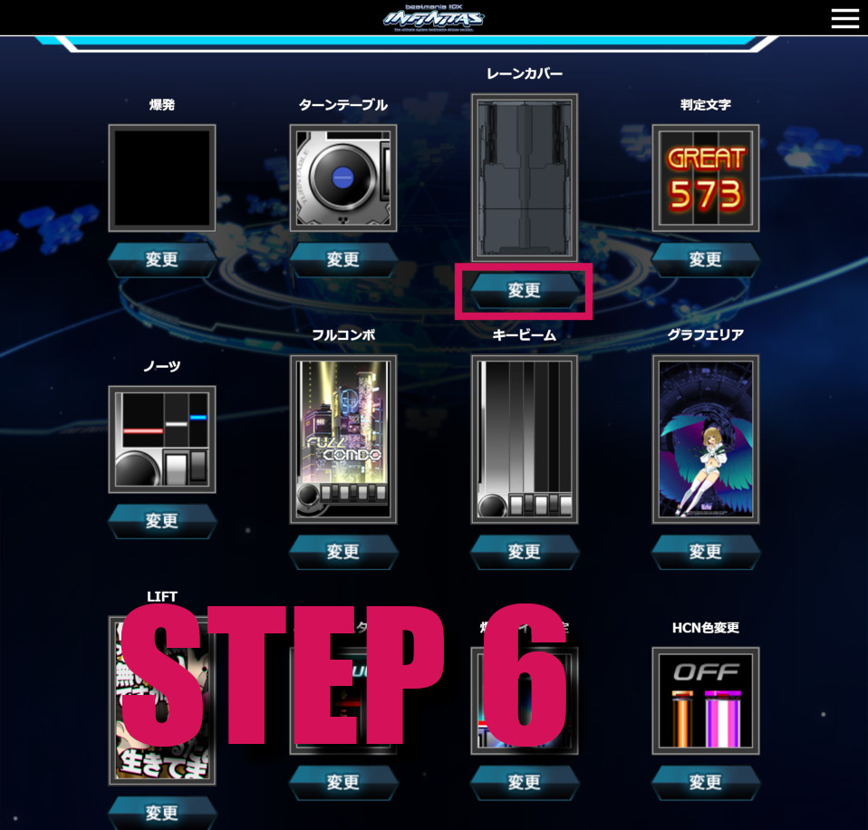
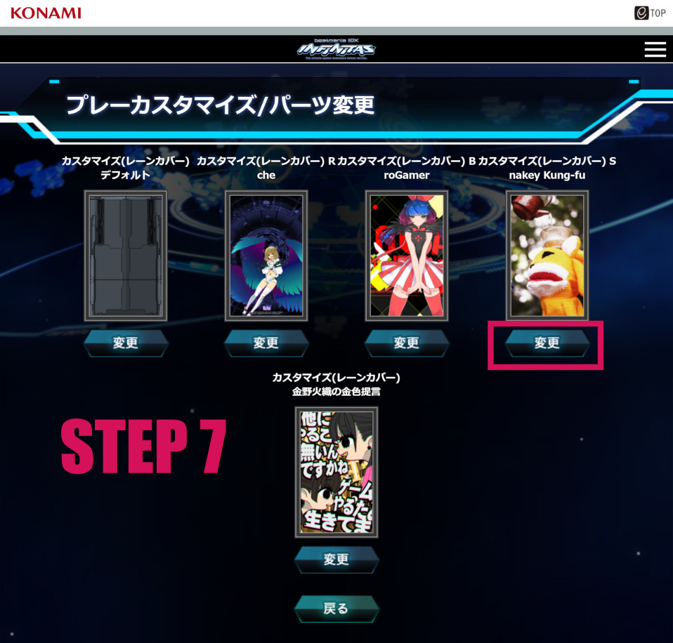
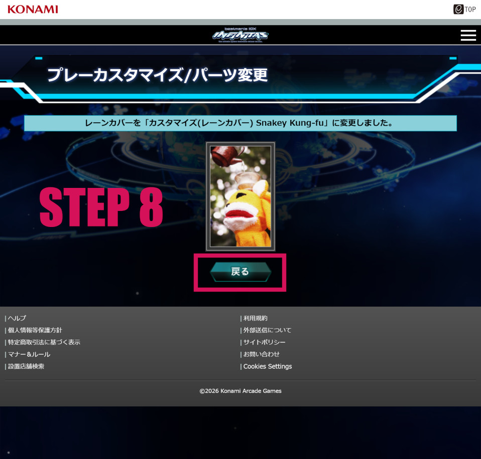

Last Updated: 2026-08-11
This is a guide for purchasing and using free-to-play customizations (lane covers, explosions, score text, etc) for beatmania IIDX infinitas.
This guide assumes you have already signed up for and are playing beatmania IIDX infinitas and that you have earned BITS, infinitas's free-to-play currency. You can do this by clearing any song.
Go to the beatmania IIDX infinitas homepage and select 購買部 (Store)

From the drop down on the top left, select カスタマイズ (Customize)

All in game customizations are on this page, you can choose one by clicking on its preview image.

The purchase will be made with free-to-play currency you've earned by playing beatmania IIDX infinitas.

Return to the beatmania IIDX infinitas homepage, then click DJ DATA > プレーカスタマイズ (Play Customize)

Select the in-game element you would like to customize. This shows your currently applied customization.

You can now select from your purchased customizations. This will be applied the next time you start the game.

If you want to set other customizations, click 戻る (Return) to return to the screen in Step 6.
